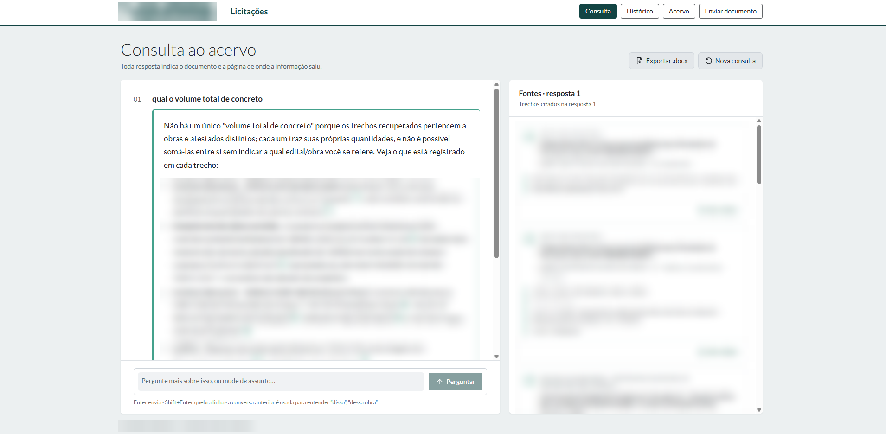

Assistente RAG para consulta de acervo documental
O problema
O cliente tinha um acervo histórico de documentos técnicos usados em licitações, em PDF, muitos deles escaneados, sem texto pesquisável. Encontrar uma informação levava horas e dependia de uma única pessoa, o dono da empresa, que sabia onde cada coisa estava. O conhecimento estava concentrado e o processo não escalava.
A solução
Um sistema de perguntas e respostas sobre o acervo: o usuário pergunta em linguagem natural e recebe uma resposta com citação do documento e da página de origem, para conferir a fonte. Por trás, um pipeline completo de ingestão e recuperação:

Destaques técnicos
- Recuperação em duas etapas: busca híbrida (vetorial + textual, combinada por Reciprocal Rank Fusion) seguida de um reranker que reordena os trechos por relevância antes da geração da resposta.
- Qualidade medida, não percebida: criamos um golden set, um gabarito de perguntas com o documento e a página corretos, e uma ferramenta de avaliação com testes A/B entre modelos de embedding.
- Auditoria de precisão: mapeamos e corrigimos falhas reais, como filtros que zeravam resultados e ruído vindo de folhas de rosto dos documentos.
- Ingestão robusta: OCR de documentos escaneados, título extraído do conteúdo (e não do nome do arquivo, o que revelou arquivos com nomes trocados) e classificação e sumarização automáticas por IA.
- Produto completo: API em FastAPI e interface em Next.js com consulta, acervo filtrável, histórico de conversas e exportação para Word.
- Desenvolvimento com agentes de IA: uso de Claude Code com agentes em paralelo e Codex guiado por instruções (AGENTS.md), com testes automatizados e registros de decisão (ADRs).
Meu papel
Liderei a frente de dados e ingestão: triagem e OCR do acervo histórico, workflows documentados de OCR e indexação, o fluxo de upload, a ferramenta de consulta à base e a ferramenta de avaliação com teste A/B de embeddings. Também participei da escrita de testes, do plano do projeto e das decisões de arquitetura.
Detalhes técnicos completos
Dados e ingestão
- Banco vetorial em Supabase (PostgreSQL + pgvector), validado contra o ambiente real.
- Triagem, OCR e indexação do acervo histórico, incluindo documentos escaneados.
- Workflows documentados de OCR e indexação, revisados a cada lote processado.
- Extração do título a partir do conteúdo do documento.
- Upload integrado ao pipeline: OCR em segundo plano, aprovação manual e indexação automática.
Pipeline RAG
- Chunking, embeddings, busca híbrida e agente de respostas com citação das fontes.
- Migração dos embeddings para a Voyage AI e reranking (rerank-2.5) após a busca híbrida.
- Limite de similaridade configurável e ferramenta que junta recuperação e geração.
- Correções a partir de uma auditoria formal de precisão.
Avaliação de qualidade
- Golden set com documento e página esperados para cada pergunta.
- Ferramenta de avaliação com teste A/B de modelos de embedding.
Classificação por IA
- Classificação e sumarização automáticas, com filtros por categoria na busca.
Engenharia e processo
- Testes automatizados offline (chunking, ingestão, roteamento).
- Diário de bordo, plano do projeto e registros de decisão de arquitetura (ADRs).
O código e os dados deste projeto pertencem ao cliente e são confidenciais. Esta página descreve a arquitetura e os resultados sem expor informações sensíveis.